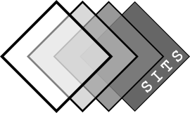

Contents:
Introduction
Module sits
Module export
Tutorials
Example of use of SITS Package - The basics
Example of use of SITS Package - Multiprocessing
sits
Tutorials
View page source
Tutorials
Example of use of SITS Package - The basics
1. Installation of SITS package and its depedencies
2. Handling the input vector file
2.1. Data loading
2.1. Bounding box calculation
2.3. CRS management
3. Loading and preprocessing of a Satellite Image Time-Series (SITS)
3.1. Creation of a Datacube from STAC catalog
3.2. Create and apply a mask
3.3. Gap filling the masked pixels
4. Saving the Datacube as a file
4.1. Default export
5. Convert NetCDF file into animated GIF
5.1. Loading NetCDF file
5.2. Making a nice-looking animation
Example of use of SITS Package - Multiprocessing
1. Installation of SITS package and its depedencies
2. Handling the input vector file
2.1. Data loading
2.2. Buffer and Bounding box calculation
2.3. CRS management
3. Multiprocessing approach
3.1. How does it work?
3.2. Producing images from the vector layer
3.3. Producing patches from the vector layer